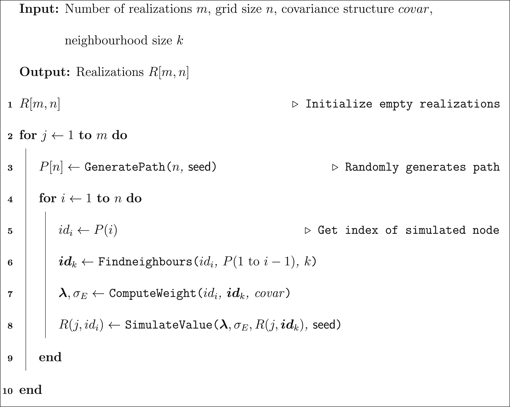

Traditional Sequential Gaussian Simulation

Error using SGS_trad Too many input arguments.
Contents
- 1. Creation of the grid and initialization of path
- 2. Initialization Spiral Search
- 3. Initialization of covariance lookup table
- 4. Realization loop
- 4.1 Generation of the path
- 4.2 Loop of scale for multi-grid path
- 4.2.1 Initializsed the search table of neighbors for the scale
- 4.2.1 Loop of simulated node
- 4.2.1.1 Neighborhood search
- 4.2.1.2 Kriging system solving and simulation
function [Rest, t] = SGS_trad(nx,ny,m,covar,parm)
tik.global = tic;
1. Creation of the grid and initialization of path
[Y, X] = ndgrid(1:ny,1:nx); if parm.mg sx = 1:ceil(log(nx+1)/log(2)); sy = 1:ceil(log(ny+1)/log(2)); sn = max([numel(sy), numel(sx)]); nb = nan(sn,1); start = zeros(sn+1,1); dx = nan(sn,1); dy = nan(sn,1); for i_scale = 1:sn dx(i_scale) = 2^(sn-sx(min(i_scale,end))); dy(i_scale) = 2^(sn-sy(min(i_scale,end))); end end
2. Initialization Spiral Search
Initialize spiral search stuff which don't change
x = ceil( min(covar(1).range(2)*parm.wradius, nx)); y = ceil( min(covar(1).range(1)*parm.wradius, ny)); [ss_Y, ss_X] = ndgrid(-y:y, -x:x);% grid{i_scale} of searching windows ss_dist = sqrt( (ss_X/covar(1).range(2)).^2 + (ss_Y/covar(1).range(1)).^2); % find distence ss_id_1 = find(ss_dist <= parm.wradius); % filter node behind radius. rng(parm.seed_search); ss_id_1 = ss_id_1(randperm(numel(ss_id_1))); [~, ss_id_2] = sort(ss_dist(ss_id_1)); % sort according distence. ss_X_s=ss_X(ss_id_1(ss_id_2)); % sort the axis ss_Y_s=ss_Y(ss_id_1(ss_id_2)); ss_n=numel(ss_X_s); %number of possible neigh if parm.mg ss_scale=sn*ones(size(ss_X)); for i_scale = sn-1:-1:1 x_s = [-fliplr(dx(i_scale):dx(i_scale):x(end)) 0 dx(i_scale):dx(i_scale):x(end)]+(x+1); y_s = [-fliplr(dy(i_scale):dy(i_scale):y(end)) 0 dy(i_scale):dy(i_scale):y(end)]+(y+1); ss_scale(y_s,x_s)=i_scale; end ss_scale_s = ss_scale(ss_id_1(ss_id_2)); else ss_scale_s = sn*ones(size(ss_id_2)); end
3. Initialization of covariance lookup table
if parm.lookup ss_a0_C = zeros(ss_n,1); ss_ab_C = zeros(ss_n); for i=1:numel(covar) a0_h = sqrt(sum(([ss_Y_s(:) ss_X_s(:)]*covar(i).cx).^2,2)); ab_h = squareform(pdist([ss_Y_s ss_X_s]*covar(i).cx)); ss_a0_C = ss_a0_C + kron(covar(i).g(a0_h), covar(i).c0); ss_ab_C = ss_ab_C + kron(covar(i).g(ab_h), covar(i).c0); end end % Transform ss.ab_C sparse? k_covar_c0 = sum([covar.c0]); k_nb = k.nb;
4. Realization loop
tik.real = tic;
Rest = nan(ny,nx,m);
for i_real=1:m
Res=nan(ny,nx);
4.1 Generation of the path
Path = nan(ny,nx);
path = nan(nx*ny,1);
rng(parm.seed_path);
if parm.mg
for i_scale = 1:sn
[Y_s,X_s] = ndgrid(1:dy(i_scale):ny,1:dx(i_scale):nx); % matrix coordinate
id = find(isnan(Path(:)) & ismember([Y(:) X(:)], [Y_s(:) X_s(:)], 'rows'));
nb(i_scale) = numel(id);
start(i_scale+1) = start(i_scale)+nb(i_scale);
path( start(i_scale)+(1:nb(i_scale)) ) = id(randperm(nb(i_scale)));
Path(path( start(i_scale)+(1:nb(i_scale)) )) = start(i_scale)+(1:nb(i_scale));
end
else
id=find(isnan(Path));
path = id(randperm(numel(id)));
Path(path) = 1:numel(id);
dx=1; dy=1; nb = numel(id); start=[0 nb]; sn=1;
end
XY_i=[Y(path) X(path)];
rng(parm.seed_U);
U=randn(ny,nx);
4.2 Loop of scale for multi-grid path
for i_scale = 1:sn
4.2.1 Initializsed the search table of neighbors for the scale
ss_id = find(ss_scale_s<=i_scale);
ss_XY_s = [ss_Y_s(ss_id) ss_X_s(ss_id)];
if k.lookup
ss_a0_C_s = ss_a0_C(ss_id);
ss_ab_C_s = ss_ab_C(ss_id,ss_id);
end
4.2.1 Loop of simulated node
for i_pt = start(i_scale)+(1:nb(i_scale))
4.2.1.1 Neighborhood search
n=0;
neigh=nan(k_nb,1);
NEIGH_1 = nan(k_nb,1);
NEIGH_2 = nan(k_nb,1);
for nn = 2:size(ss_XY_s,1) % 1 is the point itself... therefore unknown
ijt = XY_i(i_pt,:) + ss_XY_s(nn,:);
if ijt(1)>0 && ijt(2)>0 && ijt(1)<=ny && ijt(2)<=nx
if Path(ijt(1),ijt(2)) < i_pt % check if it,jt exist
n=n+1;
neigh(n) = nn;
NEIGH_1(n) = ijt(1);
NEIGH_2(n) = ijt(2);
if n >= k_nb
break;
end
end
end
end
4.2.1.2 Kriging system solving and simulation
if n==0 Res(path(i_pt)) = U(i_pt)*k_covar_c0; NEIGH=[]; else if k.lookup a0_C = ss_a0_C_s(neigh(1:n)); ab_C = ss_ab_C_s(neigh(1:n), neigh(1:n)); else D = pdist([0 0; ss_XY_s(neigh(1:n),:)]*covar.cx); C = covar.g(D); if n==1 a0_C = C; ab_C = 1; else a0_C = C(1:n)'; % Equivalent to : squareform(C(n+1:end)); ab_C = diag(ones(n,1))*0.5; ab_C(tril(true(n),-1)) = C(n+1:end); ab_C = ab_C + ab_C'; end end LAMBDA = ab_C \ a0_C; S = k_covar_c0 - LAMBDA'*a0_C; NEIGH = NEIGH_1 + (NEIGH_2-1)* ny; Res(path(i_pt)) = LAMBDA'*Res(NEIGH(1:n)) + U(i_pt)*sqrt(S); end
end
end
Rest(:,:,i_real) = Res;
end
t.real = toc(tik.real);
t.global = toc(tik.global);
end